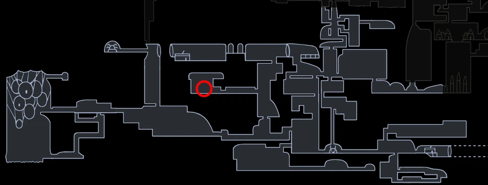

GALIEN
 Boss In Action
Boss In Action  Browse More Bosses
Browse More Bosses
Galien can be found in Deepnest, close to the Failed Tramway.
Galien trained in the wilds outside of Hallownest, hoping to become a knight. He became known for his strength, being undefeated in battle and claimed to be the strongest warrior in Hallownest. He desired to prove his strength to The Pale King and came to Deepnest to test his valor and prove himself. However, the creatures in Deepnest proved too strong and killed him. When talking to the Knight, he is under the impression he is still alive, thinking his dead husk was some poor fool.
Health:
230/368/479/570/640
Scaling with Nail Upgrades 0/1/2/3/4 respectively.
Moves: